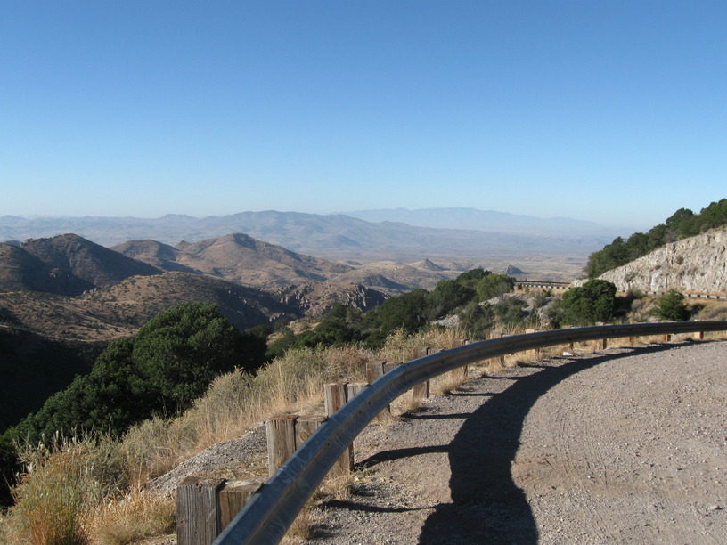
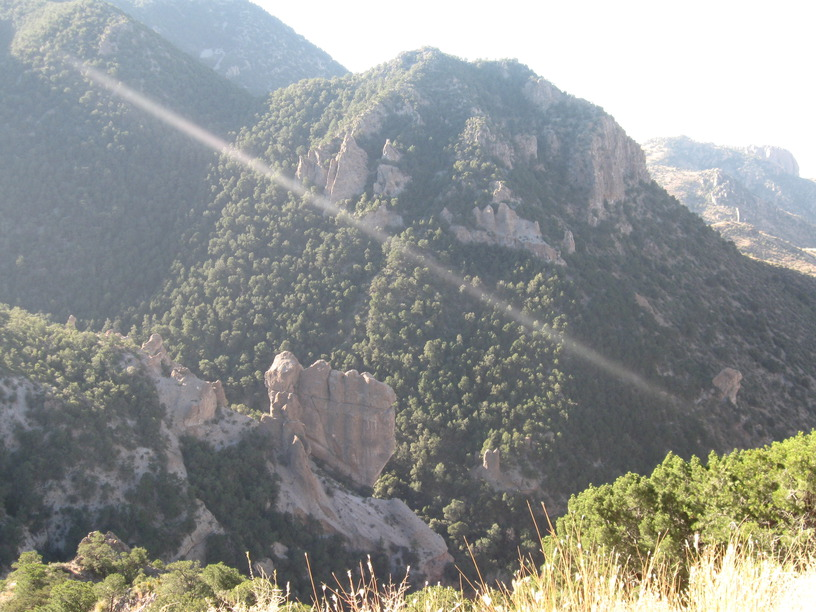
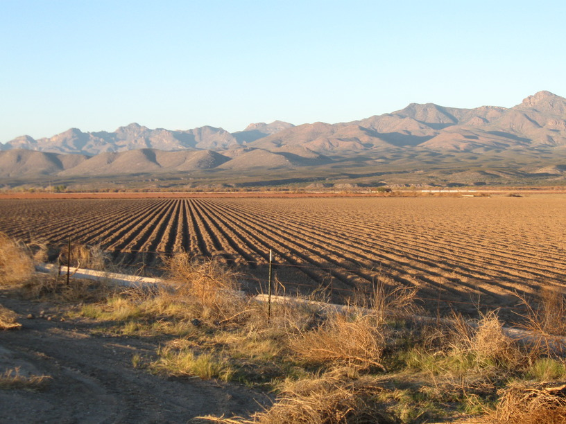
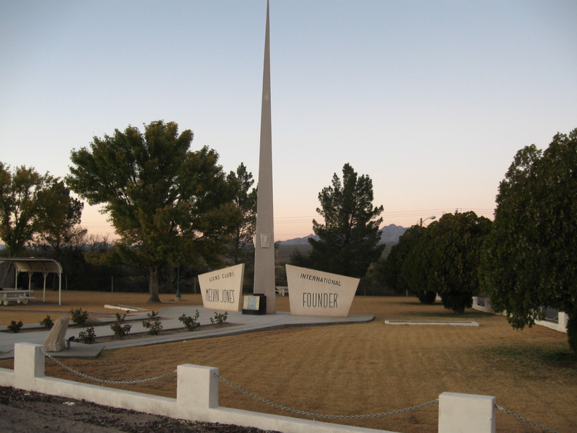

23 Nov 2008, Fort Thomas, AZ
Wheeee!!! Today I am camping about 3000' lower than last night—that means I had a lot of downhill. The first descent—into Three Way, AZ, was the most fun. Tight, winding switchbacks & some incredible vistas made it a challenge to see everything—I wanted to look at the scenery, but needed to watch the road at the same time.
I didn't get the massive mileage I had hoped for because it was cold this morning, so despite waking before dawn, I only started riding at 8, and was going pretty slow even then. Tonight is already much warmer than this time last night, so hopefully I can get an early start tomorrow.
I did a good job of keeping my speed—and cadence—up during the short climb after Three Way & then also after the road flattened out going into Safford. I think it helps to have an upbeat song in your head ("Two Step" & "3x5" today).
Tonight I'm camping at the memorial for the founder of the Lions Clubs. Dad got a kick out of that & asked me to take a photo. It's a nice park with a monument. There are two members' phone numbers listed in the information box, so I called up & asked if I could camp. "Of course," was basically the answer. Nice people...



